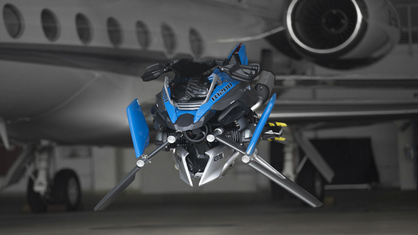

CONOCE EL PROTOTIPO DE MOTO VOLADORA DE LEGO Y BMW

Una vez más Lego ha demostrado que la imaginación no tiene límites, luego de haber presentado junto a BMW el prototipo ‘Hover Ride Design Concept’, el cual recreó la ‘BMW Motorrad R 1200 GS‘ que inicialmente salió en la línea Technic de Lego.
La razón de su construcción a una escala real fue el inquebrantable lazo que se creó entre el prototipo en Lego y los científicos e ingenieros de BMW. Fue tan grande la atracción que sintieron que decidieron agregarle una característica más: que pueda volar. Además, el modelo a escala real es tan semejante al Technic que se pueden disfrutar cada uno de los detalles, los cuales estuvieron a cargo de BMW.
“Fue una gran idea y un magnífico desafío creativo desarrollar un prototipo del ‘Technic BMW R 1200 GS Adventure’. Nuestro concepto no sólo incorpora el diseño de ‘BMW Motorrad’ con elementos típicos como el motor boxer y la característica silueta GS basados en el estilo Lego Technic”, dijo Alexander Buckan, jefe de BMW Motorrad en entrevista a CarandBike.
En BMW son conscientes de la evolución del mercado, y por ello han implementado estos nuevos modelos para que muy pronto hagan parte de sus líneas de productos. Todos han sido desarrollados a la par por empresas que buscan romper las barreras del cliente a bordo de una moto.
Aunque el modelo de la ‘Hover Ride’ no es funcional, la multinacional de motos y vehículos lo presentará en centros de Motorrad en Europa, después de haberlo revelado oficialmente al mundo en el Lego World que se llevó a cabo en Copenhague (Dinamarca) hace unos días.
Además, su lanzamiento al mercado parece ser bien lejana, ya que los encargados de iniciar la misión fueron los de la BMW Junior, subdivisión de la empresa que se encargó de construir el prototipo a escala. Y si a esto se le suman los innumerables errores que deben corregir para que el vuelo en la moto sea seguro, la ‘Hover Ride’ puede tardar mucho más tiempo en salir al mercado.